Erzählung 1 · Aufbau und Inhalt
Der Nachlass Theodore von Kármáns
157 Kisten, 4.215 Scan-Ordner, 142.505 Scans. Was darin liegt, wie es geordnet ist und was die digitale Edition davon erschließt, in zehn Kapiteln und Grafiken aus den Daten der Edition.
Originale: California Institute of Technology, Caltech Archives, Theodore von Kármán Collection. Digitale Edition: Gerd Graßhoff (©).
Kapitel 1
Ein Nachlass in Kisten
Der Nachlass von Theodore von Kármán liegt in den Caltech Archives des California Institute of Technology in Pasadena als Theodore von Kármán Collection. Er ist in Kisten geordnet, jede Kiste in nummerierte Ordner. Eine Signatur wie 117-19 nennt Kiste 117, Ordner 19 (Sammlung karman-nachlass, Ordner 117-19, S. 0).
Gescannt sind 157 Kisten mit 4.215 Scan-Ordnern und 142.505 Scans. Die Scans längerer Ordner sind in Teile von höchstens 70 Seiten geteilt, die mit I, II, III bezeichnet sind; jeder Teil zählt als eigener Scan-Ordner. Die Grafik zeigt für jede Kiste die Zahl der Scans; die Farbe gibt an, zu welcher Gruppe von Ordnern die Kiste gehört. Die Kisten 1 bis 33 enthalten die Korrespondenz mit Personen, alphabetisch nach dem Namen des Partners. Es folgen Gesellschaften und Akademien, Firmen und Verlage, Hochschulen, Regierungsstellen und Militär, dann Sachakten, Vorlesungen und Manuskripte, Arbeiten anderer Autoren, Ehrungen, Familie, Finanzen und Presse. (Sammlung karman-nachlass, Datenmanifest)
Die digitale Edition erschließt davon einen Teil als PDAI-Bestand. Ein PDAI-Dokument ist ein Scan-Ordner mit seinen Seitenbildern, der Transkription jeder Seite und der Erschließung der Stücke, die auf den Seiten stehen. Der PDAI-Bestand umfasst 1.066 Dokumente aus den Kisten 1, 10–13 und 100–132 mit 38.172 Seiten, das sind 27 % der Scans; 415 dieser Dokumente sind Teile eines geteilten Ordners. In der Grafik ist der PDAI-Anteil jeder Kiste golden eingezeichnet. (Sammlung karman-nachlass, Datenmanifest)
Die Kisten des PDAI-Bestands gehören zu vier Sections der Findhilfe der Caltech Archives. Jeder Ordner beginnt mit einem Deckblatt, das die Section nennt: Section I, Personal Correspondence, in den Kisten 1 bis 13; Section VII, Technical Files, in den Kisten 100 bis 114; Section VIII, Publication Correspondence, in den Kisten 115 und 116; Section IX, Manuscripts, in den Kisten 117 bis 132. (Sammlung karman-nachlass, Datenmanifest)
Von der Korrespondenz mit Personen sind nur die Kisten 1 und 10 bis 13 erschlossen, also die Partner mit den Namen A bis Barath und Fr bis Huang. Nicht im PDAI-Bestand sind außerdem die Kisten 34 bis 96 mit der Korrespondenz mit Gesellschaften, Firmen, Hochschulen und Regierungsstellen, darunter AGARD, NACA, die U.S. Air Force und das Jet Propulsion Laboratory, und die Kisten 133 bis 157 mit Ehrungen, Familie, Finanzen und Presse. Was die folgenden Kapitel zählen, gilt für den PDAI-Bestand, nicht für den ganzen Nachlass. (Sammlung karman-nachlass, Datenmanifest)
Die 157 Kisten des gescannten Nachlasses
Kapitel 2
Was der Bestand enthält
Jedes Dokument trägt die Kategorie seiner Ordnerbeschriftung. Die Grafik fasst die Kategorien in vier Gruppen zusammen: Korrespondenz, eigene Arbeiten Kármáns, Sachakten und Projekte, Arbeiten anderer Autoren. Die Fläche eines Feldes entspricht der Zahl der Seiten.
Die größte Kategorie sind die Arbeiten anderer Autoren: 242 Dokumente mit 8.314 Seiten, Aufsätze und Berichte, die Kármán zugeschickt wurden. Es folgen die Korrespondenz mit Personen (5.048 Seiten), die Sachakten zu Hängebrücken (4.928 Seiten) und die technischen Manuskripte und Notizen (4.566 Seiten). (Sammlung karman-nachlass, Datenmanifest)
Nach der Zahl der Dokumente verschiebt sich das Bild. Die Korrespondenz mit Personen umfasst 204 Dokumente, die technischen Manuskripte 142, die Patente 64 und die Windturbinen 61. Viele kleine Sachakten, etwa zu Luftschiffen, Segelflugzeugen, Glas oder der Autobahn Frankfurt, bestehen aus wenigen Ordnern. (Sammlung karman-nachlass, Datenmanifest)
Innerhalb eines Dokuments sind die einzelnen Stücke erfasst: ein Brief, eine Notiz, ein Bericht, eine Beilage, ein Telegramm. Diese Kapitel nennen ein solches Stück eine Inhaltseinheit. Die Erschließung hat 15.976 Einheiten erfasst; 827 davon sind leere Seiten, die in keiner Zählung vorkommen. Es bleiben 15.149 Inhaltseinheiten: 5.676 Briefe, 3.903 Notizen, 3.347 Berichte, 885 Beilagen, 420 Telegramme und 417 Memoranden. (Sammlung karman-nachlass, Datenmanifest)
Zu jeder Einheit hat die Erschließung Absender, Empfänger, Ort, Datum, Sprache, eine Inhaltsangabe (Regest) und Schlagwörter festgehalten, soweit das Stück sie erkennen lässt. Die Erschließung ist maschinell. Ihre Angaben sind Lesarten des Stücks und keine redigierten Katalogeinträge; jede lässt sich im Viewer am Faksimile prüfen.
Kapitel 3
Fünf Jahrzehnte Korrespondenz
8.716 der 15.149 Inhaltseinheiten tragen ein lesbares Jahr, das sind 58 %. Nur sie gehen in die Zeitreihen ein; die 6.433 undatierten Einheiten fehlen dort und werden nicht nachträglich datiert. (Sammlung karman-nachlass, Datenmanifest)
In 6.233 Einheiten ist Kármán Absender oder Empfänger: 2.513 hat er geschrieben, 3.720 hat er erhalten. Die übrigen Einheiten sind Briefe Dritter, Berichte, Notizen und Beilagen, die in seinen Akten liegen. Die Zahl der datierten Einheiten steigt von 1.419 in den 1920er Jahren auf 2.061 in den 1930er und 2.931 in den 1940er Jahren und fällt in den 1950er Jahren auf 1.744. (Sammlung karman-nachlass, Datenmanifest)
Zwei Jahre ragen heraus. 1928 zählt 262 Einheiten; die häufigsten Schlagwörter sind Aerodynamische Theorie (145) und Anfragen nach Sonderdrucken (95). 1940 ist mit 821 Einheiten das dichteste Jahr des Bestands. Zwei Sachakten tragen es: die Windturbinen (274 Einheiten) und die Tacoma-Narrows-Brücke (162), die am 7. November 1940 einstürzte. (Sammlung karman-nachlass, Datenmanifest)
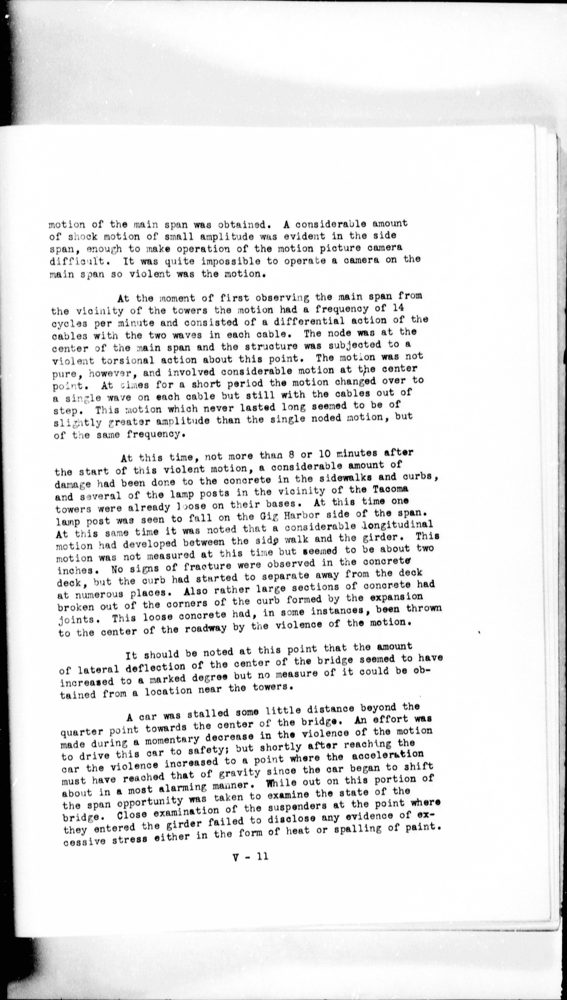
Im Viewer öffnen · Caltech Archives, Theodore von Kármán Collection. Digitale Edition: Gerd Graßhoff (©).
Die farbigen Bänder hinter den Säulen sind die Arbeitsperioden der zweiten Erzählung: Studium, Aachen, Pasadena vor dem Krieg, Krieg und wissenschaftliche Beratung, AGARD. Die Seite Arbeitsperioden prüft jede Grenze gegen die Schreiborte und zeigt, was sich von Periode zu Periode ändert.
Datierte Inhaltseinheiten je Jahr, 1900–1963
Kapitel 4
Von Aachen nach Pasadena
7.332 Inhaltseinheiten nennen einen Schreibort. Die Karte zeigt die Orte, die einer Stadt der Ortsliste zugeordnet werden konnten (5.923 Einheiten); die Kreisfläche entspricht der Zahl der Einheiten. Die häufigsten Orte sind Pasadena (1.468), Aachen (619) und New York (522). (Sammlung karman-nachlass, Datenmanifest)
Das Stromdiagramm darunter zeigt die neun häufigsten Orte Jahr für Jahr. Bis 1930 kommen die meisten Einheiten mit Ortsangabe aus Aachen und Berlin. In Aachen liegen die Technische Hochschule und ihr Aerodynamisches Institut. In Berlin sitzt das Reichspatentamt, die in den Einheiten der Aachener Jahre am häufigsten genannte Institution. (Sammlung karman-nachlass, Datenmanifest)
Ab 1930 erscheint Pasadena, der Sitz des California Institute of Technology. 1932 kommen erstmals mehr Einheiten aus Pasadena als aus Aachen. Das Titelblatt des Cours de mécanique des fluides nennt Kármán „Directeur de l‘Institut Guggenheim d‘aéronautique de Pasadena“ (Sammlung karman-nachlass, Ordner 118-7, S. 5).
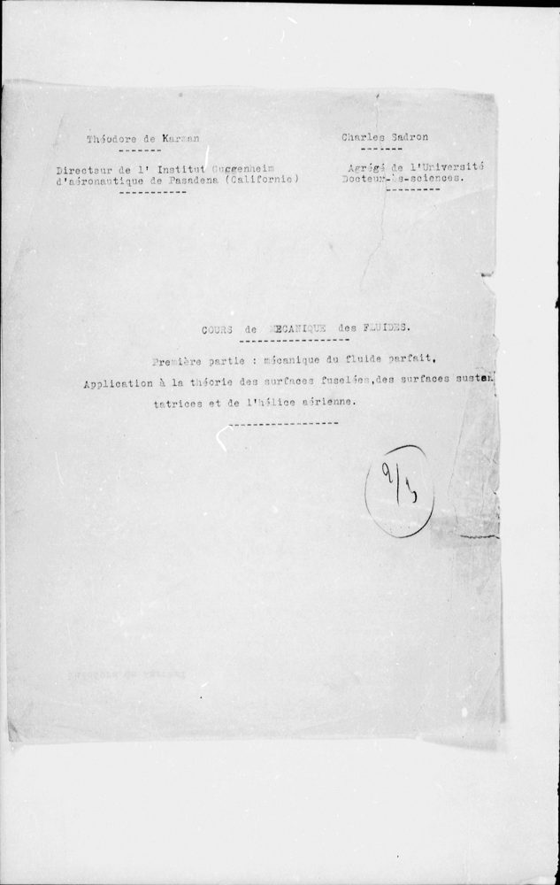
Im Viewer öffnen · Caltech Archives, Theodore von Kármán Collection. Digitale Edition: Gerd Graßhoff (©).
In den 1940er Jahren treten Washington und New York hervor, ab 1948 Paris, in den 1950er Jahren Turin. Ein Brief vom 14. Februar 1945 gibt als Anschrift „Chief of Air Staff, Scientific Advisory Group, Washington“ an (Sammlung karman-nachlass, Ordner 10-9, S. 26); ein Brief Giuseppe Gabriellis aus Turin vom 24. Mai 1952 dankt für eine AGARD-Sitzung in Paris (Sammlung karman-nachlass, Ordner 10-15, S. 19).
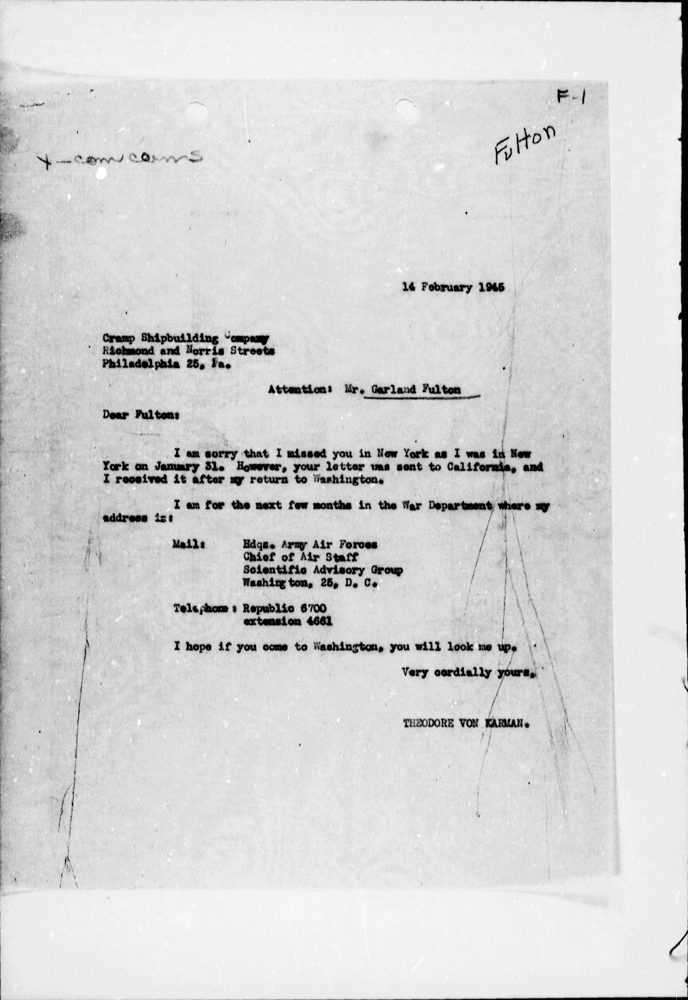
Im Viewer öffnen · Caltech Archives, Theodore von Kármán Collection. Digitale Edition: Gerd Graßhoff (©).
Kapitel 5
Sprachen
Die Erschließung hält für jede Einheit die Sprache fest. Im ganzen Bestand sind 11.029 Einheiten englisch, 2.815 deutsch, 448 französisch und 270 ungarisch. (Sammlung karman-nachlass, Datenmanifest)
Die Anteile ändern sich mit dem Schreibort. In den 1920er Jahren sind 83 % der datierten Einheiten deutsch und 10 % englisch. In den 1930er Jahren kehrt sich das Verhältnis um: 74 % englisch, 21 % deutsch. In den 1940er Jahren ist der englische Anteil 95 %. (Sammlung karman-nachlass, Datenmanifest)
Von einigen ungarischen Briefen liegen in denselben Ordnern englische Übersetzungen, etwa von den Briefen Károly Goldzihers aus Göttingen aus dem Jahr 1901 (Sammlung karman-nachlass, Ordner 11-21, S. 2).
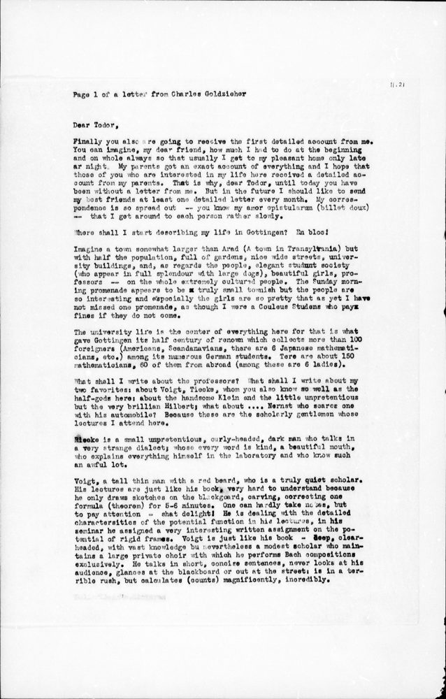
Im Viewer öffnen · Caltech Archives, Theodore von Kármán Collection. Digitale Edition: Gerd Graßhoff (©).
Sprachen der datierten Einheiten je Jahrzehnt
Kapitel 6
Korrespondenten
Ein Korrespondenzpartner ist hier eine Person oder Institution, die in einer Einheit mit Kármán als Absender oder Empfänger auftritt. Personen, die in einem Brief nur genannt werden, zählen nicht. Die Namen sind im Personenregister der Edition vereinheitlicht; der Bestand hat 1.547 verschiedene Partner. (Sammlung karman-nachlass, Datenmanifest)
Die häufigsten sind Herzfeld, H. (217 Einheiten, datiert 1921 bis 1933), Gabrielli, Giuseppe (170, 1925 bis 1962), Angus, Robert W. (151) und Putnam, P. C. (114). Die Balken trennen, was an Kármán ging (gold) und was von ihm ausging (blau). (Sammlung karman-nachlass, Datenmanifest)
Die Rangfolge gilt für den PDAI-Bestand. Von der Korrespondenz mit Personen sind nur die Namen A bis Barath und Fr bis Huang erschlossen; Partner mit anderen Anfangsbuchstaben erscheinen nur, wenn ihre Briefe in Sachakten oder in den Ordnern anderer Partner liegen.
Das Register führt einige Personen unter zwei oder drei Namensformen, etwa „Putnam, P. C.“, „Putnam, Palmer C.“ und „Putnam, Palmer Cosslett“. Sie sind hier nicht zusammengeführt; das Datenmanifest listet die Kandidaten unter name_variant_candidates.
Das Netz zeigt Kármán und seine 60 häufigsten Partner (Sammlung karman-nachlass, Datenmanifest). Die Farbe eines Kreises nennt die Periode, in der das erste datierte Stück mit diesem Partner liegt. Gestrichelte Linien verbinden Partner, die in Kármáns Akten miteinander korrespondieren: Die Sachakten zur Tacoma-Narrows-Brücke enthalten die Briefe der Ingenieure und Behörden untereinander, nicht nur die Briefe an Kármán.
Kapitel 7
Themen
Jede Einheit trägt Schlagwörter, die bei der Erschließung vergeben wurden. Die Schlagwörter sind englisch und nicht aus einem festen Vokabular gewählt. Für die Grafik sind Varianten zusammengefasst („wind turbines“ zu „wind turbine“, „rocketry“ zu „rockets“) und Archivvermerke wie „archival“ oder „copyright“ ausgeschlossen. Die Zeilen zeigen 15.149 Einheiten verteilt auf Sachthemen; die Farbe ist der Anteil an den datierten Einheiten des Jahrzehnts. (Sammlung karman-nachlass, Datenmanifest)
Aerodynamik ist in jedem Jahrzehnt vertreten, insgesamt in 799 Einheiten. (Sammlung karman-nachlass, Datenmanifest)
In den 1920er Jahren kennzeichnen die Patente (375 Einheiten), die aerodynamische Theorie und Hubschrauber den Bestand. Die Patentakten betreffen unter anderem Turbinenschaufeln, brandsichere Benzinbehälter für Flugzeuge und den Schraubenfesselflieger, einen am Seil gehaltenen Hubschrauber, der Beobachtungsballone ersetzen sollte. (Sammlung karman-nachlass, Datenmanifest)
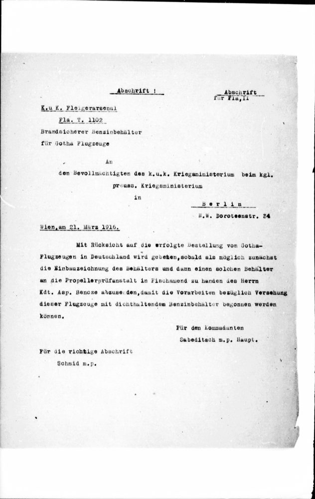
Im Viewer öffnen · Caltech Archives, Theodore von Kármán Collection. Digitale Edition: Gerd Graßhoff (©).
In den 1930er und 1940er Jahren kommen die großen Sachakten hinzu: Hydraulik und Pumpenversuche (184 Einheiten in den 1930er Jahren), Windturbinen (465 in den 1940er Jahren), Hängebrücken (536) und die Tacoma-Narrows-Brücke (577). (Sammlung karman-nachlass, Datenmanifest)
Überschallströmung, Stoßwellen, Strahlantrieb und Raketen erscheinen ab den 1940er Jahren, Raumfahrt in den 1950er Jahren. Weil die Kisten 34 bis 96 mit der Korrespondenz der Luftwaffe, des Jet Propulsion Laboratory und von AGARD nicht im PDAI-Bestand sind, sind diese Themen hier schwächer vertreten als im ganzen Nachlass. (Sammlung karman-nachlass, Datenmanifest)
Sachthemen je Jahrzehnt
Kapitel 8
Manuskripte und Vorlesungen
Die Manuskripte Kármáns liegen in den Kisten 117 bis 123, die zu Section IX der Caltech-Findhilfe, Manuscripts, gehören. Im PDAI-Bestand sind es 227 Dokumente mit 7.019 Seiten in vier Gattungen: Vorlesungen und Kurse (36 Dokumente), Buchmanuskripte (8), allgemeine Manuskripte (41) und technische Manuskripte (142). Jeder Kreis ist ein Dokument an dem Jahr, das die Ordnerbeschriftung nennt. Ein Klick öffnet es im Viewer. (Sammlung karman-nachlass, Datenmanifest)
Die Vorlesungen beginnen mit den Übungen zur Mechanik des Sommersemesters 1910, handschriftlichen Aufgabenblättern zur Statik (Sammlung karman-nachlass, Ordner 117-1, S. 2). Es folgen Mechanik I und II 1920 und 1921 und die Zwölf Vorträge über ausgewählte Kapitel der Aerodynamik, „gehalten in Washington und Tokyo 1926/7“ von „Professor an der technischen Hochschule zu Aachen“. Ihr Inhaltsverzeichnis reicht von den Quellen des Luftwiderstandes über Grenzschicht, Auftrieb und induzierten Widerstand bis zur Festigkeit von Luftschrauben und den Luftkräften auf Luftschiffkörper (Sammlung karman-nachlass, Ordner 117-5, S. 4).
Am California Institute of Technology entstehen 1936 die Seminarvorlesungen Theory of Turbulence und Compressible Fluids, 1944 die Vorlesungen Jet Propulsion. Die zweite Vorlesung vom 13. März 1944 teilt die Strahlantriebe in Raketen und luftatmende Systeme ein (Sammlung karman-nachlass, Ordner 117-19, S. 2).
Die technischen Manuskripte sind nach Jahren abgelegt, von 1908 bis 1961. Ein Beispiel ist das Typoskript Compressibility Effects in Aerodynamics von 1941 mit handschriftlichen Korrekturen. Die allgemeinen Manuskripte reichen von 1918 bis 1962. (Sammlung karman-nachlass, Datenmanifest)
74 Manuskripte tragen kein Jahr. Die Kisten 122 und 123 ordnen sie nach der Sprache: englisch, deutsch, französisch, ungarisch. Dazu gehören die unvollständigen Manuskripte und das Buchmanuskript Cours de mécanique des fluides, das Kármán mit Charles Sadron verfasst hat. Diese Manuskripte stehen rechts in der Grafik; ihnen wird kein Jahr zugewiesen. (Sammlung karman-nachlass, Datenmanifest)
Manuskripte nach Jahr und Gattung
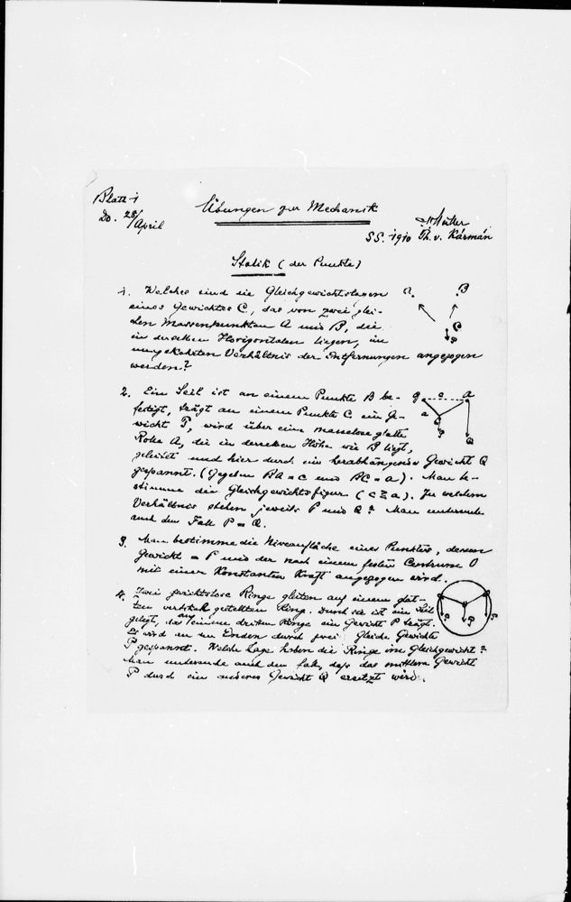
1910Übungen zur Mechanik
Übungen zur Mechanik, Sommersemester 1910, Blatt 1: Statik der Punkte, handschriftlich
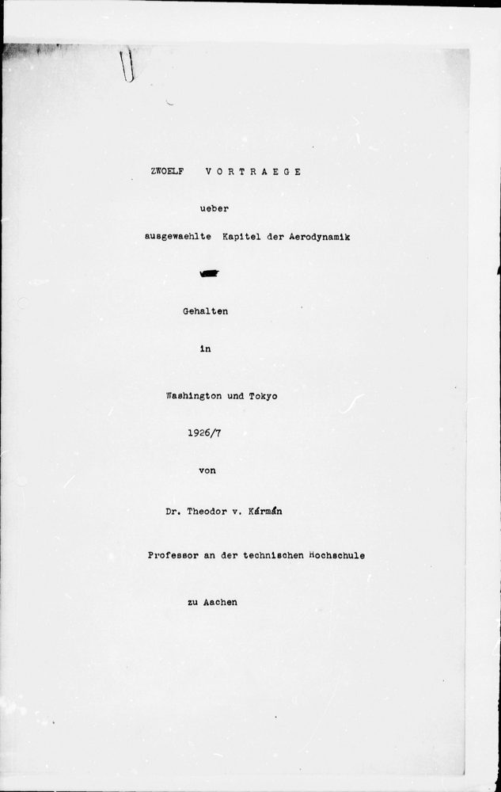
1926–1927Zwölf Vorträge über ausgewählte Kapitel der Aerodynamik
Titelblatt: Zwölf Vorträge über ausgewählte Kapitel der Aerodynamik, gehalten in Washington und Tokyo 1926/7
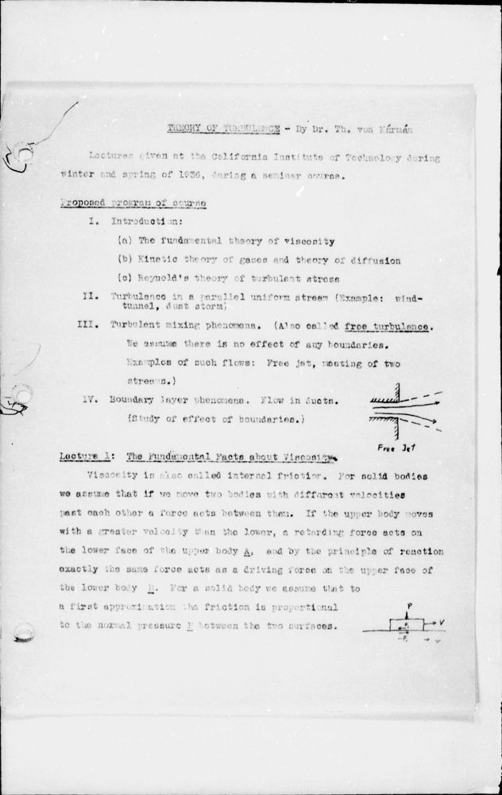
1936Theory of Turbulence
Theory of Turbulence: Vorlesungen im Seminar des California Institute of Technology, Winter und Frühjahr 1936
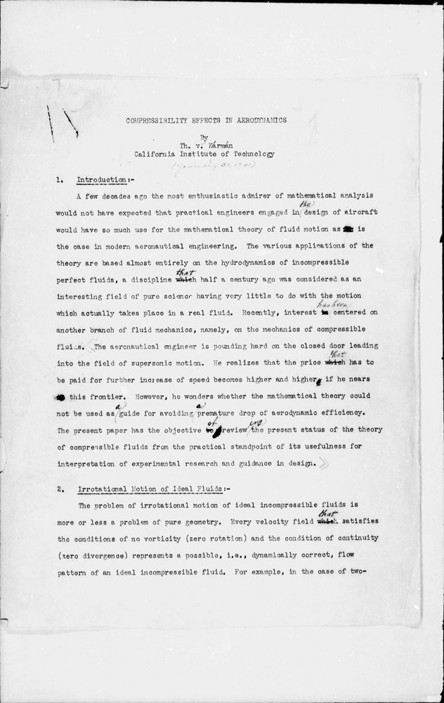
1941Compressibility Effects in Aerodynamics
Compressibility Effects in Aerodynamics, Typoskript mit Korrekturen, 1941
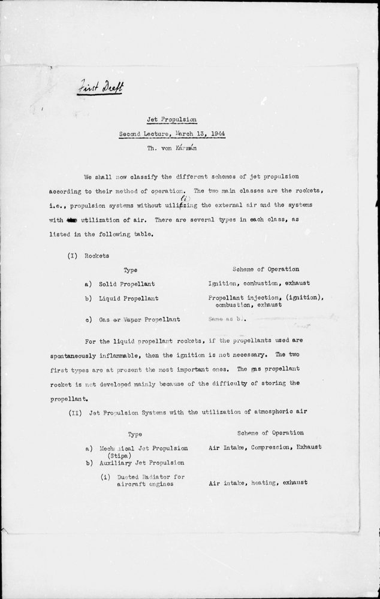
1944-03-13Jet Propulsion
Jet Propulsion, zweite Vorlesung vom 13. März 1944, erster Entwurf
undatiertCours de mécanique des fluides
Titelblatt: Théodore de Kármán und Charles Sadron, Cours de mécanique des fluides, Teil I; Kármán als Direktor des Guggenheim-Instituts in Pasadena bezeichnet, undatiert
1940-11-07Einsturz der Tacoma-Narrows-Brücke
Bericht von F. B. Farquharson über den Einsturz der Tacoma-Narrows-Brücke am 7. November 1940, S. V-11
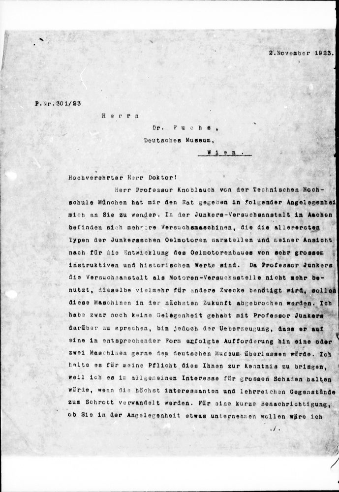
1923-11-02Kármán an das Deutsche Museum
Kármán an Dr. Fuchs, adressiert „Deutsches Museum, Wien“, zu den Versuchsmaschinen der Junkers-Versuchsanstalt in Aachen, 2. November 1923
Kapitel 9
Forschen mit Notebooks
Die Zählungen dieser Seite sind Antworten auf Fragen an die Datenbank der Edition. Famulus-Notebooks halten solche Fragen fest, sodass jede Antwort wiederholt und geprüft werden kann. Ein Notebook ist ein Text mit ausführbaren Blöcken. Ein Block besteht aus einer Präambel, der Partitur, und einer Instruktion in natürlicher Sprache.
Das Notebook Kármán: Korrespondenz und Manuskripte stellt drei Fragen. Wer korrespondierte zwischen 1930 und 1940 mit Kármán? Wer nennt Einstein in Briefen an Kármán? Was liegt an Manuskripten im Nachlass? Die Partitur des ersten Blocks nennt die Teilaufgabe (correspondence-roster), den Zeitraum und die Datenbank, die nur lesend geöffnet wird. Der Lauf schreibt das Ergebnis als Artefakt, hier eine Tabelle der Partner, und legt es versioniert ab (Block karman-roster).
Das Urteil vergleicht das Ergebnis mit einer Untergrenze, die vor dem Lauf festgelegt ist: mindestens 200 verschiedene Partner für 1930 bis 1940, mindestens drei Briefe, die Einstein nennen, mindestens 190 Manuskripte mit mindestens 5.600 Seiten (Block karman-roster, einstein-erwaehnung, manuskripte). Eine geprüfte Antwort wird zum Golden, zum Maßstab für spätere Läufe. Ändert sich eine Eingabe, läuft der Block erneut; bringt der Lauf dasselbe Ergebnis, bleibt die Version.
Diese Seite folgt demselben Grundsatz. Jede Zahl ist ein Schlüssel im Datenmanifest, das die Abfrage, die Zählregel und die Filter nennt.
Ein Block im Famulus-Notebook
Kapitel 10
Ausblick
Der Nachlass enthält einen Briefwechsel mit dem Deutschen Museum. Am 2. November 1923 schreibt Kármán an Dr. Fuchs, adressiert „Deutsches Museum, Wien“, auf den Rat von Professor Knoblauch von der Technischen Hochschule München. In der Junkers-Versuchsanstalt in Aachen stünden mehrere Versuchsmaschinen, „die die allerersten Typen der Junkersschen Oelmotoren darstellen“; da Professor Junkers die Versuchsanstalt nicht mehr als Motorenversuchsstelle benutze, sollten sie abgebrochen werden. Kármán ist überzeugt, dass Junkers eine oder zwei Maschinen dem Deutschen Museum überlassen würde. Am 20. November 1923 dankt das Museum und kündigt an, sich an Professor Junkers in Dessau zu wenden, um einen Versuchsmotor zu erhalten (Sammlung karman-nachlass, Ordner 10-11, S. 6) (Sammlung karman-nachlass, Ordner 10-11, S. 5).
Im Viewer öffnen · Caltech Archives, Theodore von Kármán Collection. Digitale Edition: Gerd Graßhoff (©).
Diese Seite ist der Einstieg in die Quellen zur Geschichte der Luftfahrt, die nach demselben Verfahren erschlossen sind. Der Kármán-Nachlass ist die erste Sammlung. Aufgenommen wird eine weitere Sammlung, wenn ihre Originale und Rechte benannt sind, sie als PDAI-Sammlung durchsuchbar ist, ein Viewer jedes Dokument über eine stabile Adresse öffnet und ihre Zahlen aus demselben Build stammen. Für den Kármán-Nachlass selbst stehen die Kisten 34 bis 96 aus: die Korrespondenz mit Gesellschaften, Firmen, Hochschulen und Regierungsstellen. (Sammlung karman-nachlass, Datenmanifest)
Weiter zur zweiten Erzählung: Arbeitsperioden.